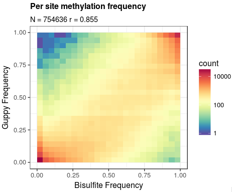

Methylation calling¶
Medaka includes a basic workflow for aggregating Guppy basecalling results for Dcm, Dam, and CpG methylation. The workflow is currently very preliminary and subject to change and improvement.
Aggregating the information from Guppy outputs is a two stage process, first the basecalling results are extracted .fast5 files and placed in a .bam file:
FAST5PATH=guppy/workspace
REFERENCE=grch38.fasta
OUTBAM=meth.bam
medaka methylation guppy2sam ${FAST5PATH} ${REFERENCE} \
--workers 74 --recursive \
| samtools sort -@ 8 | samtools view -b -@ 8 > ${OUTBAM}
samtools index ${OUTBAM}
This program will extract both the basecall sequence and methylation scores, align the basecall to the reference, and store results in a standard format. In this preliminary workflow the methylation scores are stored in two SAM tags, ‘MC’ and ‘MA’, one each for 5mC and 6mA respectively. The tags are 8bit integer array-values, one value per basecall position. This is a different form to that proposed in the current hts-specs proposition, but allows for more trivial parsing.
The second step is to aggregate the reference-aligned information to produce a simple tabular summary of read methylation counts:
BAM=meth.bam
REFERENCE=grch38.fasta
REGION=chr20:500000-1000000
OUTPUT=meth.tsv
medaka methylation call --meth cpg ${BAM} ${REFERENCE} ${REGION} ${OUTPUT}
Here the option --meth cpg indicates that loci containing the sequence
motif CG should be examined for 5mC presence. Other choices are
dcm (motifs CCAGG and CCTGG) for 5mC and dam (GATC) for 6mA.
The output file is a simple tab-delimited text file with columns: ‘ref.name’, ‘position’, ‘motif’, ‘fwd.meth.count’, ‘rev.meth.count’, ‘fwd.canon.count’, and ‘rev.canon.count’. Here fwd./rev. indicate counts on the two DNA strands and meth./canon. indicate counts for methylated and canonical bases. Note that the position field records the position of the first base in the motif recorded.
As a first demonstration of this method the plot below shows a comparison with bisulphite sequencing results for chromosome 20 of the NA12878 sample.
Reasonable correlation is found, especially given the simplicity of the aggregation method. A slight bias toward lower methylation frequency is observed through the range, except at very low frequencies where the method has a bias upward.